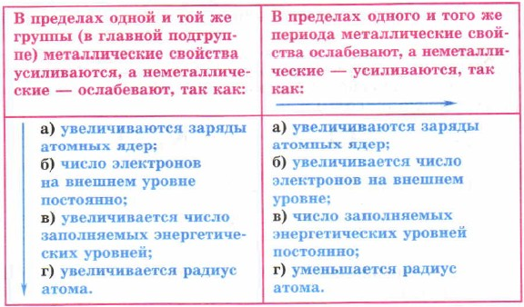
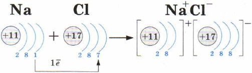
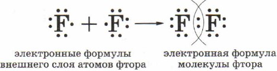

В Периодической системе Д. И. Менделеева с увеличением порядкового
номера свойства атомов химических элементов изменяются следующим
образом.

Химическую связь, образующуюся между ионами, называют ионной.
Рассмотрим образование этой химической связи на примере хорошо
знакомого всем соединения хлорида натрия (поваренной соли):

Химическую связь, возникающую в результате образования общих
электронных пар, называют атомной или ковалентной.
Образование молекулы фтора изображено на схеме:
